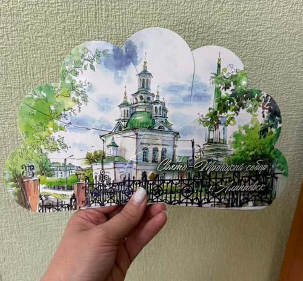
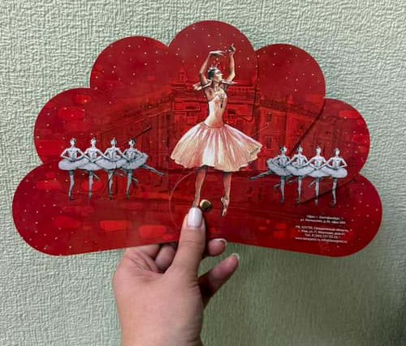

Веера: от искусства до современного маркетинга

История веера
Антикварный веер с котом 1900 год, Париж, Франция
Создатель: Дювеллерой, Париж.
Крашенные деревянные палочки (конструкция из бруса) с заклепкой.
На первый взгляд это веер; открывшись, становится кошкой, смотрящей прямо. Художник нарисовал портрет на отдельных палочках так, чтобы полосы животного совпадали с ритмом обрезания — перекрывающиеся ламели, соединенные сверху лентой, а не непрерывным листом. Кошачьи ушки и щеки подрезают гребешковый контур, а ювелирная заклепка собирает палочки у основания. Многие примеры Duvelleroy носят на заклепке эмблему дома - ромашку, подпись Belle Époque, которая превратила полезную петлю в крошечную марку.
Современные реалии
Веер всегда был не просто аксессуаром, а настоящим произведением искусства. Изысканные изделия прошлых веков поражали своей красотой и мастерством исполнения. Однако времена меняются, и сегодня веер приобретает новое значение в мире рекламы и маркетинга.
Современный рынок диктует свои правила. Сегодня заказчики ценят практичность, доступность и возможность разместить свою рекламу. Именно поэтому мы разработали особую линейку вееров, которая отвечает всем требованиям современного бизнеса.
Наше предложение

Практичное решение от типографии «Лазурь» — это:
- Доступная цена без потери качества
- Возможность полной персонализации дизайна
- Простота конструкции для удобства использования
- Быстрое производство без потери качества
- Оптимальное соотношение цена/качество
Особенности производства

Наши веера отличаются:
- Компактностью и удобством в использовании
- Возможностью полноцветной печати с обеих сторон
- Качественными материалами
- Долговечностью конструкции
- Вариативностью размеров и форматов
Применение
Веера от «Лазурь» идеально подходят для:
- Корпоративных мероприятий
- Выставок и конференций
- Промо-акций
- Сувенирной продукции
- Рекламных кампаний
Индивидуальный подход
Каждый заказ для нас уникален. Мы готовы разработать дизайн под конкретные задачи вашего бизнеса, учитывая все пожелания и требования. Наши специалисты помогут создать эффективный рекламный инструмент, который будет работать на ваш бренд.
Подробнее о процессе производства и возможностях кастомизации вы можете узнать в нашей специальной статье на сайте. Свяжитесь с нами, чтобы обсудить ваш проект и получить индивидуальное предложение.